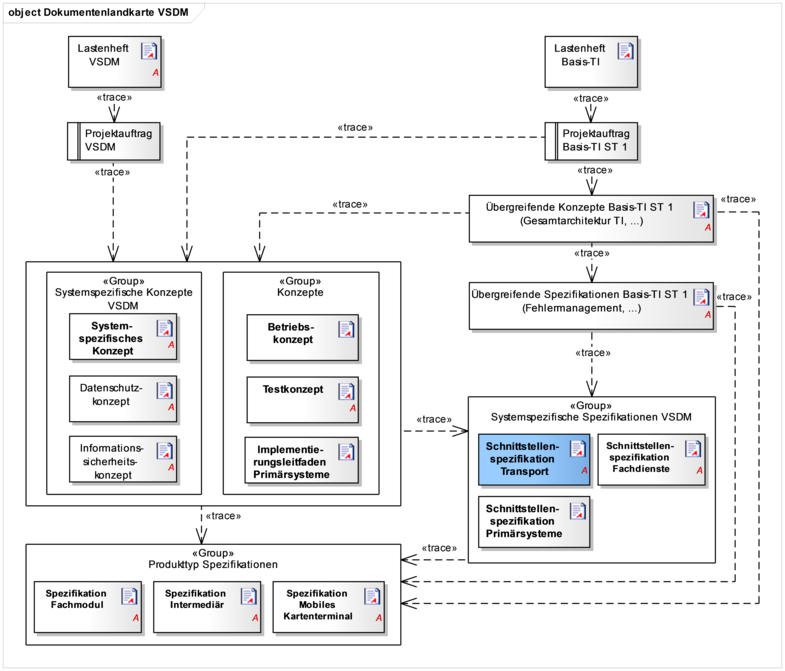
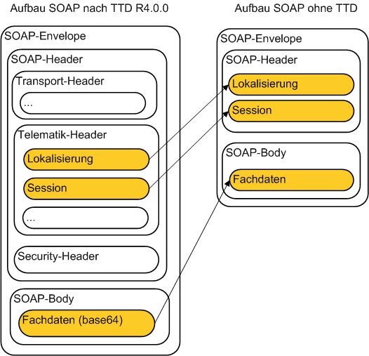
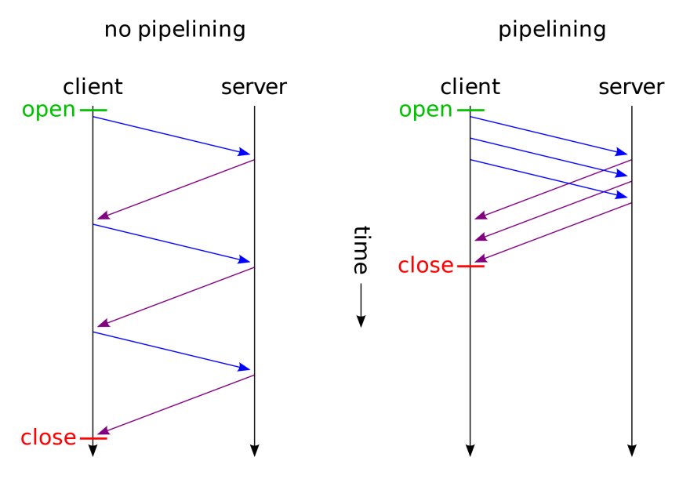
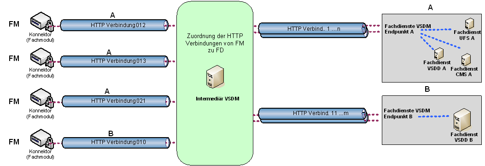
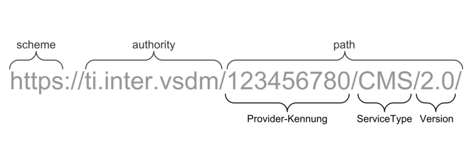
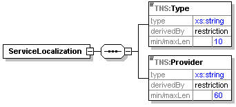
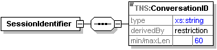

Elektronische Gesundheitskarte und Telematikinfrastruktur
Schnittstellenspezifikation
Transport VSDM
| Version | 2.5.0 |
| Revision | 571734 |
| Stand | 15.05.2019 |
| Status | freigegeben |
| Klassifizierung | öffentlich |
| Referenzierung | gemSpec_SST_VSDM |
Änderung zur Vorversion
Die Änderungen zur Vorversion aufgrund der Änderungsliste P18.1 sind gelb markiert.
Dokumentenhistorie
| Version |
Stand |
Kap./ Seite |
Grund der Änderung, besondere Hinweise |
Bearbeitung |
|---|---|---|---|---|
| 2.1.0 |
02.08.17 |
Initialversion Online-Produktivbetrieb (Stufe 2.1) |
gematik |
|
| 2.2.0 |
18.12.17 |
LE-AdV-Ausbau |
gematik |
|
| 2.3.0 |
14.05.18 |
Einarbeitung lt. Änderungsliste P15.4 |
gematik |
|
| 2.4.0 |
26.10.18 |
Einarbeitung lt. Änderungsliste P15.8 |
gematik |
|
| Einarbeitung lt. Änderungsliste P18.1 |
||||
| 2.5.0 |
15.05.2019 |
freigegeben |
gematik |
Das vorliegende Dokument spezifiziert die übergreifenden Anforderungen und die Meta-Informationen für die Transportschnittstelle zwischen den Fachdiensten VSDM (UFS, VSDD, CMS) und dem Fachmodul VSDM auf Nachrichtenebene. Ziel ist es für alle Fachdienste VSDM die übergreifenden Anforderungen zusammenzufassen und den Informationstransport von Meta-Informationen vorzugeben. Um die Komplexität der Transportschnittstelle auf Nachrichtenebene zu reduzieren, wird hierbei in Abstimmung mit den Kostenträgern vom Bestandsschutz abgewichen (s. Kapitel 1.6).
Die Abbildung 1 zeigt schematisch die Dokumentenhierarchie im Projekt VSDM, in welcher die Schnittstellenspezifikation Transport innerhalb der Konzepte und Spezifikationen der Design-Phase eingeordnet ist. Die Abbildung stellt nicht die vollständige Dokumentenhierarchie des Projekts Online-Produktivbetrieb (Stufe 1) oder den Trace der Anforderungen dar.

Abbildung 1: Dokumentenhierarchie im Projekt VSDM
Kapitel 2 enthält eine Zusammenfassung der übergreifenden Festlegungen, die unter Berücksichtigung allgemeingültiger Standards für die Kommunikation mit Diensten der Fachanwendung VSDM gelten.
Kapitel 3 stellt die Festlegungen für den Transport von Meta-Informationen dar. Es wird die Struktur der Daten beschrieben, sowie Festlegungen für die Einbindung bzw. Verwendung der Informationen getroffen.
Die Festlegungen zur Fehlerbehandlung und übergreifende Fehlercodes sind in Kapitel 4 aufgeführt und zu wesentlichen Teilen der Spezifikation Fehlerbehandlung [gemSpec_OM] aus Bestandsschutzgründen übernommen.
Kapitel 5 beschreibt ein einheitliches Performance-Berichtsformat für eine übergreifende Auswertung der Performance-Kennzahlen.
Die Ausgangsanforderungen dieser Spezifikation und deren Zusammenhang zu den Anforderungen aus dem übergeordneten Konzepten und Spezifikationen werden tabellarisch in Anhang B dargestellt.
Das Dokument richtet sich an Hersteller und Anbieter der VSDM-Fachdienste und Fachmodule sowie an Hersteller und Anbieter von Produkttypen, die hierzu eine Schnittstelle besitzen.
Dieses Dokument enthält normative Festlegungen zur Telematikinfrastruktur des Deutschen Gesundheitswesens. Der Gültigkeitszeitraum der vorliegenden Version und deren Anwendung im Zulassungsverfahren werden durch die gematik GmbH in gesonderten Dokumenten (z.B. Dokumentenlandkarte, Produkttypsteckbrief, Leistungsbeschreibung) festgelegt und bekannt gegeben.
Schutzrechts-/Patentrechtshinweis
Die nachfolgende Spezifikation ist von der gematik allein unter technischen Gesichtspunkten erstellt worden. Im Einzelfall kann nicht ausgeschlossen werden, dass die Implementierung der Spezifikation in technische Schutzrechte Dritter eingreift. Es ist allein Sache des Anbieters oder Herstellers, durch geeignete Maßnahmen dafür Sorge zu tragen, dass von ihm aufgrund der Spezifikation angebotene Produkte und/oder Leistungen nicht gegen Schutzrechte Dritter verstoßen und sich ggf. die erforderlichen Erlaubnisse/Lizenzen von den betroffenen Schutzrechtsinhabern einzuholen. Die gematik GmbH übernimmt insofern keinerlei Gewährleistungen.
Grundlagen für die Ausführungen dieses Dokumentes sind
Die Transportschnittstelle zwischen den Fachdiensten VSDM (UFS, VSDD, CMS) und dem Fachmodul VSDM befindet sich nach dem OSI-Schichtenmodell in der Anwendungsschicht. Die Transportschnittstelle selbst wird dabei in die zwei Ebenen Nachrichtenebene und Anwendungsebene unterteilt. Zur Nachrichtenebene, die in diesem Dokument behandelt wird, zählen die Meta-Informationen (SOAP-Header).
Das Dokument [gemSpec_SST_FD_VSDM] spezifiziert die Schnittstelle zwischen den Fachdiensten VSDM und dem Fachmodul VSDM auf Anwendungsebene und bezieht sich auf den SOAP-Body.
Festlegungen zu tiefer liegenden Schichten im OSI-Modell und übergreifenden Themen, wie Prüfung von Zertifikaten, zulässige Algorithmen und Details der sicheren Kommunikation werden durch Spezifikationen der Basis-TI getroffen.
Festlegungen zur Ausführung von Anwendungsfällen und Vorgaben zum Betrieb der Fachdienste sind nicht Bestandteil dieser Spezifikation.
Für die Schnittstellen der Fachdienste der Kostenträger besteht Bestandsschutz. Nur in begründeten Fällen darf in Abstimmung mit den Kostenträgern davon abgewichen werden. Daher werden die Festlegungen bezüglich der Fehlerstruktur und Transport der fachlichen Inhalte aus dem Releasestand 4.0.0 in die Dokumente der Pflichtenheftphase übernommen.
Das Transportprotokoll Telematik Transport Details (TTD) ist gemäß Entscheidung der Basis-TI kein übergreifendes Protokoll mehr, das von allen Fachanwendungen der TI zwingend zu verwenden ist. Zukünftig verantworten die Fachanwendungen das Kommunikationsprotokoll selbst. Um die Komplexität zu reduzieren, wird in Abstimmung mit den Kostenträgern in der Fachanwendung VSDM auf die TTD als Transportprotokoll verzichtet.
Stattdessen werden für die Fachdienste VSDM nur die Elemente zur Lokalisierung und Sessioninformation übernommen und die Standard SOAP-Struktur verwendet. Die Spezifikation der fachlichen Schnittstelle, wie sie im Dokument [gemSpec_SST_FD_VSDM] beschrieben ist, bleibt erhalten.

Abbildung 2: Schematischer Vergleich der SOAP-Struktur mit und ohne TTD
Anforderungen als Ausdruck normativer Festlegungen werden durch eine eindeutige ID in eckigen Klammern sowie die dem RFC 2119 [RFC2119] entsprechenden, in Großbuchstaben geschriebenen deutschen Schlüsselworte MUSS, DARF NICHT, SOLL, SOLL NICHT, KANN gekennzeichnet.
Sofern im Text des systemspezifischen Konzepts auf die Ausgangsanforderungen verwiesen wird, erfolgt dies in eckigen Klammern, z.B. [VSDM-A_2093]. Dies tritt häufig bei Modellen und Tabellen auf, da viele Umsetzungsanforderungen genau auf eine dieser methodischen Beschreibungen verweisen. Wird auf Eingangsanforderungen verwiesen, erfolgt dies in runden Klammern, z.B. (VSDM-A_303).
In Anhang B1 (Anforderungszusammenhang) dieses Dokuments werden in der Tabelle 16 die Eingangsanforderungen aufgelistet, die in diesem Ergebnisdokument berücksichtigt sind. In der Spalte "umgesetzt durch" finden sich die eindeutigen Referenzen auf die dazu erarbeiteten Umsetzungsanforderungen. In Anhang B2, Tabelle 17 stehen die Umsetzungsanforderungen mit ihrem Text und dem entsprechenden Vorgänger.
Die zu einer Eingangsanforderung referenzierte Umsetzungsanforderung spiegelt die erste Ebene des Anforderungsbaumes wieder. Die Verfeinerung dieser Anforderungen zu einem vollständigen Anforderungsbaum erfolgt im Anforderungsmanagement-Tool (Jama Contour) und nicht im vorliegenden Dokument.
Um Interoperabilität zwischen verschiedenen SOAP-Implementierungen [SOAP1.1] zu gewährleisten, erfolgt die technische Umsetzung der Schnittstellen konform zum WS-I Basic Profile in der Version 1.2 [BasicProfile1.2]. [VSDM-A_2189] [VSDM-A_2241]
Die Fachdienstschnittstellen werden in Form von WSDL [WSDL1.1] und XML-Schemas definiert. Gemäß dem WS-I Basic Profile muss für die Definition die Web Services Description Language (WSDL) in der Version 1.1 verwendet werden. Die aus der WSDL resultierende Nachricht muss dem Simple Object Access Protocol (SOAP) in der Version 1.1 entsprechen und die Übertragung erfolgt mittels des Hypertext Transfer Protocols (HTTP) in der Version 1.1.
Die WSDL-Dateien und XML-Schemadateien müssen neben den fachdienstspezifischen Schnittstellenspezifikationen zur Verfügung gestellt werden, um eine einfache Implementierung zu gewährleisten und eine maschinelle Prüfung der spezifizierten Elemente zu ermöglichen. Die in den WSDLs verwendete Kodierungsmethode der SOAP-Nachrichten muss „wrapped document/literal“ sein, um Interoperabilität zu gewährleisten. [VSDM-A_2243]
Um Abhängigkeiten zwischen verschiedenen Requests des Fachmoduls zu vermeiden, darf das Fachmodul in der Kommunikation zum Intermediär kein Pipelining verwenden. Parallelität von Requests vom Fachmodul an den Intermediär VSDM kann ohne Pipelining über mehrere HTTP-connections erreicht werden. [VSDM-A_3066]
Der Intermediär darf beim Verbindungsaufbau zu einem Fachdienst kein Pipelining verwenden. Die einzelnen Request/Reply-Paare dürfen sich nicht beeinflussen. Eine HTTP-connection wird daher zu einem Zeitpunkt immer nur für ein Request/Reply-Paar verwendet. [VSDM-A_3021]

Abbildung 3: Vergleich no-pipelining vs. pipelining
Der Aufbau einer Verbindung vom Intermediär zum Fachdienst (im folgenden HTTP-Verbindung genannt) ist auf Grund von TCP-Handshake, TLS-Handshake und Abfragen auf anderen Schnittstellen zeitaufwendig. Um Verzögerungen bei der Abarbeitung eines Aufrufs vom Fachmodul zu minimieren, wird die HTTP-Verbindung zum Fachdienst nicht für jedes Request/Response-Paar neu aufgebaut. Der Intermediär hält dauerhaft HTTP-Verbindungen (persistent Connection) zu den Fachdiensten offen. Diese werden für mehrere Request/Response Paare wiederverwendet.
Connection Pool
Der Intermediär muss zu jedem Fachdienst (UFS, VSDD und CMS) einen Pool von HTTP-Verbindungen vorhalten. Die Anzahl der Verbindungen muss konfigurierbar sein. Wenn eine der vorgehaltenen Verbindungen, z.B. durch einen Fehler, vom Server abgebaut wird, dann muss der Intermediär die Verbindung innerhalb einer Zeit von höchstens 1s wieder aufbauen. Wenn der Server beim Aufbau der Verbindungen nicht erreichbar ist, dann soll der Intermediär das Connection pooling für einen Zeitraum aussetzen, bis der Endpunkt wieder erreichbar ist. [VSDM-A_3022] [A_17644][A_17645]
Zwei Request/Response-Paare, die auf Anwendungsebene zu einer Online-Aktualisierung gehören, können über verschiedene HTTP-Verbindungen übertragen werden.
Sollten die vorgehaltenen Verbindungen bei Lastspitzen nicht ausreichen, muss der Intermediär zusätzliche HTTP-Verbindungen etablieren, die dann nach Bedarf wieder geschlossen werden [VSDM-A_3023] [VSDM-A_3028].
Die Fachdienste der Krankenkassen können gebündelt durch mandantenfähige Fachdienstbetreiber angeboten werden. In dem Fall sind die Fachdienste (UFS, VSDD und CMS) für mehrere Krankenkassen über einen Endpunkt zu erreichen. Ein Endpunkt bildet sich aus der Kombination von FQDN und Port aus den mittels Service-Discovery bestimmbaren Endpunktadressen der Fachdienste. Der URL-Path wird nicht zu einer Unterscheidung von Endpunkten genutzt. Zu jedem Endpunkt ist ein Pool aufzubauen.

Abbildung 4: Beispiel für den Connection-Pool des Intermediärs
Zur Absicherung der Datenübertragung muss der Transport der SOAP-Nachrichten mittels HTTPS erfolgen. Abweichend von [BasicProfile1.2] ist Transport Layer Security (TLS) gemäß den Vorgaben des [gemSpec_Krypt#3.3.2] einzusetzen. Dies gilt sowohl für die Strecke zwischen der dezentralen TI und dem Intermediär VSDM, als auch für die Strecke zwischen dem Intermediär und dem Fachdienst. [VSDM-A_3001] [VSDM-A_3002] [VSDM-A_3003]
Da der Verbindungsaufbau in der Regel ein zeitaufwändiger Vorgang ist, sollen die Verbindungen für einen konfigurierbaren Zeitraum offen gehalten werden. Wenn dennoch Verbindungen erneut aufgebaut werden müssen, soll für die Verbindung zwischen Fachmodul und Intermediär VSDM das Session-Resumption-Verfahren verwendet werden, um eine Session ohne Neuaushandlung der Parameter fortführen zu können. [VSDM-A_2225] [VSDM-A_2226] [VSDM-A_3026]
Beim Verbindungsaufbau zwischen Fachmodul und Intermediär authentisiert sich das Fachmodul mit C.HCI.AUT Zertifikats des SM-B gegenüber dem Intermediär und der Intermediär mit seinem TLS-Server-Zertifikat (C.FD.TLS-S) gegenüber dem Fachmodul. [VSDM-A_2227] [VSDM-A_2194]
Das Fachmodul kann als Ablaufumgebung den Konnektor oder die KTR-AdV nutzen, wobei sich diese in ihrem technischen Ansatz unterscheiden.
Im Konnektor baut das Fachmodul mit Hilfe des technischen Use Cases (TUCs) des Konnektors TUC_KON_110 "Kartenbasierte TLS-Verbindung aufbauen" die TLS-Verbindung mit dem Intermediär auf. Der TUC_KON_110 wird mit CardSession der entsprechenden SM-B und URI des Intermediärs als Parameter aufgerufen. Der TUC führt die Prüfung des TLS-Server-Zertifikats des Intermediärs durch (siehe [gemSpec_Kon]).
In der KTR-AdV baut der serverseitige Anteil des Fachmodules mit Hilfe der Plattformleistung PL_TUC_TLS_SECURE_CHANNEL die TLS-Verbindung mit dem Intermediär auf. PL_TUC_TLS_SECURE_CHANNEL wird mit der URI des Intermediärs und dem Rollen-bezeichner oid_int_vsdm als Parameter aufgerufen. Die Plattformleistung führt die Prüfung des TLS-Server-Zertifikats des Intermediärs durch (siehe [gemSpec_KTR-AdV]).
Der Intermediär prüft beim Verbindungsaufbau das Client-Zertifikat des Fachmoduls entsprechend der Vorgaben von [gemSpec_PKI] bez. des TLS-Verbindungsaufbaus mit den in Tabelle 1 aufgezählten Parametern. Die OID-Werte sind [gemSpec_OID] festgelegt.
Tabelle 1: Tab_SST_VSDM_62 – Eingangsdaten für die Prüfung des Fachmodul Client-Zertifikats [VSDM-A_2228]
| TUC_PKI_018 Eingangsdaten |
Zulässiger Wert bzw. Beschreibung |
|---|---|
| TSL |
die entsprechende TSL für Infrastrukturkomponenten |
| Zertifikat |
das zu prüfende Zertifikat vom Kommunikationspartner |
| Referenzzeitpunkt |
aktuelle Systemzeit |
| Prüfmodus |
OCSP |
| PolicyList |
oid_smc_b_aut |
| Vorgesehene KeyUsage |
digitalSignature |
| Vorgesehene ExtendedKeyUsage |
id-kp-clientAuth |
| GracePeriod |
der Wert muss konfigurierbar sein |
| Offline-Modus |
nein |
| Timeout |
Default-Wert (siehe [gemSpec_PKI]) |
| TOLERATE_OCSP_FAILURE |
Default-Wert (siehe [gemSpec_PKI]) |
Der TUC gibt neben dem Status der Zertifikatsprüfung auch die im Zertifikat enthaltene Rolle (Admission) zurück. Diese müssen in der Liste der vorgesehenen Rollen enthalten sein. [VSDM-A_3027]
Tabelle 2: Tab_SST_VSDM_65 – Zulässige Rollen bei Prüfung des Fachmodul Client-Zertifikats [VSDM-A_2228]
| Zulässige Werte |
|
|---|---|
| Vorgesehene Rollen (Admission) |
oid_praxis_arzt oid_zahnarztpraxis oid_praxis_psychotherapeut oid_krankenhaus oid_oeffentliche_apotheke oid_krankenhausapotheke oid_bundeswehrapotheke oid_mobile_einrichtung_rettungsdienst oid_kostentraeger oid_adv_ktr |
Beim Verbindungsaufbau zwischen Intermediär und Fachdienst authentisiert sich der Intermediär mit seinen TLS-Client-Zertifikat (C.FD.TLS-C) gegenüber dem Fachdienst und der Fachdienst mit seinem TLS-Server-Zertifikat (C.FD.TLS-S) gegenüber dem Intermediär. [VSDM-A_2253] [VSDM-A_2222]
Der Intermediär prüft beim Verbindungsaufbau das Server-Zertifikat des Fachdienstes entsprechend der Vorgaben von [gemSpec_PKI] bez. des TLS-Verbindungsaufbaus mit den in Tabelle 3 aufgezählten Parametern. Die OID- Werte sind [gemSpec_OID] festgelegt.
Tabelle 3: Tab_SST_VSDM_63 – Eingangsdaten für die Prüfung des Fachdienste Server-Zertifikats [VSDM-A_2223]
| TUC_PKI_018 Eingangsdaten |
Zulässiger Wert bzw. Beschreibung |
|---|---|
| TSL |
die entsprechende TSL für Infrastrukturkomponenten |
| Zertifikat |
das zu prüfende Zertifikat vom Kommunikationspartner |
| Referenzzeitpunkt |
aktuelle Systemzeit |
| Prüfmodus |
OCSP |
| PolicyList |
oid_fd_tls_s |
| Vorgesehene KeyUsage |
digitalSignature |
| Vorgesehene ExtendedKeyUsage |
id-kp-serverAuth |
| GracePeriod |
der Wert muss konfigurierbar sein |
| Offline-Modus |
nein |
| Timeout |
Default-Wert (siehe [gemSpec_PKI]) |
| TOLERATE_OCSP_FAILURE |
Default-Wert (siehe [gemSpec_PKI]) |
Der TUC gibt neben dem Status der Zertifikatsprüfung auch die im Zertifikat enthaltene Rolle (Admission) zurück. Diese müssen in der Liste der vorgesehenen Rollen enthalten sein. [VSDM-A_3027]
Tabelle 4: Tab_SST_VSDM_66 – Zulässige Rollen bei Prüfung des Fachdienste Server-Zertifikats [VSDM-A_2223]
| Zulässige Werte |
|
|---|---|
| Vorgesehene Rollen (Admission), die OID des jeweiligen Fachdienstes. |
oid_ufs oid_vsdd oid_cms |
Der Fachdienst prüft beim Verbindungsaufbau das Client-Zertifikat des Intermediärs entsprechend der Vorgaben von [gemSpec_PKI] bez. des SSL-Verbindungsaufbaus mit den in Tabelle 5 aufgezählten Parametern. Die OID- Werte sind [gemSpec_OID] festgelegt.
Tabelle 5: Tab_SST_VSDM_64 – Eingangsdaten für die Prüfung des Intermediär Client-Zertifikats [VSDM-A_2254]
| TUC_PKI_018 Eingangsdaten |
Zulässiger Wert bzw. Beschreibung |
|---|---|
| TSL |
die entsprechende TSL für Infrastrukturkomponenten |
| Zertifikat |
das zu prüfende Zertifikat vom Kommunikationspartner |
| Referenzzeitpunkt |
aktuelle Systemzeit |
| Prüfmodus |
OCSP |
| PolicyList |
oid_fd_tls_c |
| Vorgesehene KeyUsage |
digitalSignature |
| Vorgesehene ExtendedKeyUsage |
id-kp-clientAuth |
| GracePeriod |
der Wert muss konfigurierbar sein |
| Offline-Modus |
nein |
| Timeout |
Default-Wert (siehe [gemSpec_PKI]) |
| TOLERATE_OCSP_FAILURE |
Default-Wert (siehe [gemSpec_PKI]) |
Der TUC gibt neben dem Status der Zertifikatsprüfung auch die im Zertifikat enthaltene Rolle (Admission) zurück. Diese müssen in der Liste der vorgesehenen Rollen enthalten sein. [VSDM-A_3027]
Tabelle 6: Tab_SST_VSDM_67 – Zulässige Rollen bei Prüfung des Intermediär VSDM Client-Zertifikats [VSDM-A_2254]
| Zulässiger Wert |
|
|---|---|
| Vorgesehene Rollen (Admission) |
oid_int_vsdm |
Um die Menge der zu übertragenen Daten zu reduzieren und damit die Antwortzeiten zu verbessern, ist es sinnvoll, die Daten für den Transport zu komprimieren. Das Fachmodul und die Fachdienste müssen eine HTTP-Komprimierung [HTTP1.1-sec3] unterstützen.
Das Fachmodul muss die Unterstützung der Komprimierung den Fachdiensten über das HTTP-Header-FeldAccept-Encoding mitteilen. Im Request muss das HTTP-Header-Feld Accept-Encoding mit den unterstützen Kompressions-Algorithmen angeben werden. Es muss mindestens der gzip-Algorithmus unterstützt werden. [VSDM-A_2200] [VSDM-A_2255]
Eine Komprimierung des ersten Requests darf derzeit nicht erfolgen, da eine Komprimierung dieser Nachricht erst durchgeführt werden kann, wenn sichergestellt ist, dass alle Fachdienste eine solche Nachricht verarbeiten könnten. Die Fachdienste sollen mit dem angegebenen Kompressions-Algorithmus aus dem HTTP-Header-Feld Accept-Encoding die Response für den Transport komprimieren. Auch die Fachdienste sollen so umgesetzt werden, dass sie komprimierte Nachrichten vom Fachmodul verarbeiten können. [VSDM-A_2199] [VSDM-A_2256]
Der Sender muss valide SOAP-Nachrichten konform der WSDL bzw. der XSDs der aufgerufenen SOAP-Schnittstelle erzeugen. Es sind nur die in der fachdienstspezifischen WSDL-Datei definierten Header-Elemente erlaubt. Zusätzliche Header-Elemente (z.B. WS-Addressing-Header) sind verboten. [VSDM-A_2190] [VSDM-A_2242] [VSDM-A_2202] [VSDM-A_2262]
Die Nachrichten sollen keine Whitespaces zwischen einzelnen Elementen enthalten, da durch diese die Nachrichtengröße unnötig erhöht wird. Zudem schränken Whitespaces bei signierten Nachrichten die Interoperabilität ein. Signierte Nachrichten sind im derzeitigen Projektumfang zwar nicht enthalten, könnten aber zukünftig relevant werden. Daher ist es durchaus sinnvoll, bereits jetzt darauf zu achten, dass das eingesetzte Framework keine überflüssigen Whitespaces erzeugt. [VSDM-A_2203] [VSDM-A_2261]
Jede Komponente, die Nachrichten auf SOAP-Ebene verarbeitet, muss im Zuge der Verarbeitung die Nachricht gegen die WSDL und den zugehörigen XSDs validieren. Das transparente Weiterleiten von Nachrichten wird nicht als Nachrichtenverarbeitung verstanden. Nicht zu der WSDL bzw. dem XSD valide Nachrichten müssen mit einer Fehlermeldung zurückgewiesen werden. [VSDM-A_2205] [VSDM-A_2257] [VSDM-A_2204] [VSDM-A_2231] [VSDM-A_2263]
Neben der Schemavalidierung muss die nachrichtenverarbeitende Komponente auch die Inhalte aller zur Verarbeitung benötigten Elemente auf zulässige Werte validieren. Es ist eine Fehlertoleranz gegenüber nicht verarbeiteten Elementen erlaubt, es sei denn, die Validierung dieser Elemente ist explizit durch eine Anforderung aus z.B. Sicherheitsgründen gefordert. [VSDM-A_2206] [VSDM-A_2258] [VSDM-A_2312] [VSDM-A_2313]
Das XML-Schema für SOAP-Nachrichten erlaubt im Standard zusätzliche Elemente im Header und Body, wobei der Sender einer Nachricht nur die spezifizierten Elemente verwenden darf. Der Empfänger einer Nachricht ist nicht verpflichtet auf unzulässige, zusätzliche Elemente zu prüfen, da nur getestete und zugelassene Komponenten zum Betrieb in der TI aufgenommen werden. Damit muss der Hersteller eines Produkttyps keine Prüfungen implementieren, um unzulässige Elemente zu erkennen. [VSDM-A_2207] [VSDM-A_2259]
Die Reihenfolge der Header-Elemente in der Nachricht muss für die verarbeitende Komponente unerheblich sein. [VSDM-A_2208] [VSDM-A_2260]
Der Intermediär VSDM muss für alle HTTP Nachrichten [HTTP 1.1]
unverändert zwischen Fachmodul und Fachdienst weiterleiten.
Die hop-by-hop Header (z.B. Transfer-Encoding, Connection) sind davon nicht betroffen. Sie werden vom Intermediär VSDM so gesetzt, wie für die Kommunikation zwischen Fachmodul und Intermediär sowie zwischen Intermediär und Fachdienst notwendig. [VSDM-A_2233]
Der Intermediär VSDM muss das HTTP Header-Field „Via“ in jeder weitergeleiteten Nachricht (Request-, Response- und Fehlernachricht) gemäß [HTTP1.1] setzen oder ergänzen. [VSDM-A_2271]
Der Intermediär DARF NICHT HTTP Header Informationen gemäß [RFC7239] ergänzen, die den Konnektor eindeutig identifizieren. [VSDM-A_3068]
Damit der Intermediär VSDM eine Lokalisierung des Fachdienstes ausschließlich anhand der Endpunkt-Adresse ohne Verarbeitung der SOAP-Nachricht durchführen kann, muss das Fachmodul die Lokalisierungsinformationen in die Endpunkt-Adresse aufnehmen.
Die Endpunkt-Adresse wird gebildet, in dem über eine konfigurierbare interne Zuordnungstabelle oder Service-Discovery der feste Bestandteil der Adresse ermittelt wird. Der feste Bestandteil besteht aus scheme, authority und Prefix des path. Der restliche Bestandteil wird dynamisch durch das Fachmodul gebildet. Die Endpunkt-Adresse ist entsprechend der Tabelle 7 aufgebaut.
Tabelle 7: Tab_SST_VSDM_01 Kodierung der Endpunkt-Adresse [VSDM-A_2209] [VSDM-A_2234]
| URL-Komponente |
Wert |
Beschreibung |
|---|---|---|
| scheme |
https |
Da die Übertragung immer über https geschieht, ist dies auch das einzige vorgesehene Schema. |
| authority |
Adresse des Intermediärs |
Hostname und Port des Intermediärs |
| path |
Prefix |
Optionaler Bestandteil des Path. Wird durch den Anbieter des Intermediär VSDM festgelegt. |
| Provider-Kennung |
Der genaue Wert wird durch die jeweilige Schnittstellenspezifikation bestimmt. Entspricht derzeit immer der Kostenträgerkennung |
|
| ServiceType |
Der genaue Wert wird durch die jeweilige Schnittstellenspezifikation bestimmt. Derzeit bekannte Werte: UFS, VSD oder CMS |
|
| Schnittstellen-Version |
Die jeweilige Version der genutzten Schnittstelle. Der genaue Wert wird durch die jeweilige Schnittstellenspezifikation bestimmt. Die derzeit bekannten Versionen sind: UFS = 2.0 VSD = 2.0 CMS = 2.0 |
Das Fachmodul muss sicherstellen, dass die Trennzeichen zwischen den einzelnen Werten korrekt gesetzt sind. In Abbildung 5 ist anhand einer Beispiel Endpunkt-Adresse die Kodierung exemplarisch dargestellt. [VSDM-A_2235]

Abbildung 5: Beispiel Endpunkt-Adresse
Bei der Definition der Schnittstelle mittels der WSDL wird festgelegt, welche Meta-Informationen zusammen mit den Fachdaten in den Nachrichten übertragen werden. So kann ein Request bzw. Response keine, eine oder mehrere Meta-Informationen zusätzlich zu den fachlichen Daten enthalten.
Es werden in dieser Spezifikation Elemente für die Meta-Information definiert, die für die Fachdienste VSDM relevant sind. Für die Schnittstellen selbst können innerhalb der jeweiligen Schnittstellenspezifikation auch noch weitere Elemente definiert werden. Die aufgeführten Elemente sind in der XSD [CMCommon.xsd] spezifiziert.
Im Folgenden wird das Element definiert, welches die Lokalisierungsinformationen ServiceType und Provider-Kennung enthält. Die Information über die Schnittstellen-Version und den Operationsnamen ergeben sich bereits durch den Namespace und die SOAP-Operation der SOAP-Nachricht.
Dieses Header-Element verwendet der Fachdienst, um die korrekte Lokalisierung durch den Intermediär zu validieren und fehlgeleitete Nachrichten abzuweisen. Das Fachmodul muss deswegen nicht nur die Endpunkte, wie in Kapitel 2.9 beschrieben, kodieren, sondern auch die Felder im Header der Request-Nachricht korrekt setzen.

Abbildung 6: Element ServiceLocalization
Tabelle 8: Tab_SST_VSDM_02 – Element ServiceLocalization [VSDM-A_2211]
| Bezeichnung |
ServiceLocalization |
|---|---|
| Beschreibung |
Header-Element zum Kapseln der Lokalisierungsinformationen. |
| Datentyp |
complexType |
Tabelle 9: Tab_SST_VSDM_03 – Element Type [VSDM-A_2211]
| Bezeichnung |
Type |
|---|---|
| Beschreibung |
Das Element Type enthält den Typ des Fachdienstes (ServiceType), an den eine Anfrage gerichtet ist. Jede Fachanwendung definiert das für die Dienste gültige Kürzel. Der angegebene Wertebereich wird nicht über das Schema festgelegt, sondern der Empfänger muss bei der Verarbeitung die Lokalisierung prüfen. |
| Datentyp |
string |
| Wertebereich |
UFS | VSD | CMS |
Tabelle 10: Tab_SST_VSDM_04 – Element Provider [VSDM-A_2211]
| Bezeichnung |
Provider |
|---|---|
| Beschreibung |
Das Feld Provider dient der Servicelokalisierung und identifiziert den Provider. Für die Fachanwendung VSDM wird die Kostenträgerkennung genutzt. Die Kostenträgerkennung ist das 9-stellige Institutionskennzeichen des Kostenträgers, das als Organizational Unit Name im Subject Distinguished Name des C.CH.AUT-Zertifikates des Versicherten auf der eGK zu finden ist. Der angegebene Wertebereich wird nicht über das Schema festgelegt, sondern der Empfänger muss bei der Verarbeitung die Lokalisierung prüfen. |
| Datentyp |
string |
| Feldlänge |
60 |
| Wertebereich |
[0-9] |
Im Folgenden wird das Element definiert, welches es ermöglicht, eine Folge von zusammengehörigen Nachrichten zu korrelieren. Dafür wird innerhalb des Elements eine eindeutige Kennung der Session übertragen.

Abbildung 7: Element SessionIdentifier
Tabelle 11: Tab_SST_VSDM_05 – Element SessionIdentifier [VSDM-A_2212] [VSDM-A_2264]
| Bezeichnung |
SessionIdentifier |
|---|---|
| Beschreibung |
Header-Element zum Kapseln der Sessioninformation. |
| Datentyp |
complexType |
Tabelle 12: Tab_SST_VSDM_06 - Element ConversationID [VSDM-A_2212] [VSDM-A_2264] [VSDM-A_2299] [VSDM-A_2301] [VSDM-A_2330]
| Bezeichnung |
ConversationID |
|---|---|
| Beschreibung |
Das Element ConversationID enthält die eindeutige Kennung einer Session. Diese Kennung wird von dem Fachdienst erzeugt und muss in Folgenachrichten zur Korrelierung vom Fachmodul übernommen werden. Der Fachdienst muss einen konfigurierbaren Timeout für eine Session vorsehen. Empfängt der Fachdienst innerhalb dieses Zeitraums keine Nachricht zu dieser Session, müssen später folgende Nachrichten mit einer Fehlermeldung beantwortet werden. Der empfohlene Wert des Timeouts beträgt 1 Minute. |
| Datentyp |
string |
| Feldlänge |
1-60 |
| Wertebereich |
Zulässige Zeichen sind [A-Za-z0-9] sowie „.“ und „-“. |
Für alle Fehler, die innerhalb der Nachrichtenverarbeitung auftreten, muss ein gematik SOAP Fault erzeugt werden. Die Struktur des gematik SOAP Fault ist in Kapitel 4.2 spezifiziert. Tritt der Fehler nicht auf Nachrichtenebene, sondern auf einer tieferen Ebene des OSI-Stacks auf (z.B. bei der HTTP-Übertragung oder TLS-Verbindungsaufbau), wird kein gematik SOAP Fault erzeugt. Der Fehler wird stattdessen auf der tieferen Protokollebene behandelt, auf der dieser Fehler aufgetreten ist. [VSDM-A_2214]
In der Fehlermeldung dürfen keine sicherheitsrelevanten Informationen enthalten sein (Stacktraces, Bezeichnung bzw. Version eingesetzter Basissoftware), die Außenstehenden Rückschlüsse auf Interna der Implementierung eines Services erlauben und für Angriffe genutzt werden könnten. [VSDM-A_2236] [VSDM-A_2266]
Bei Fehlern, die auf Ebene des HTTP-Protokolls außerhalb der Nachrichtenverarbeitung auftreten, soll der Fachdienst mit einer HTTP-Fehlermeldung antworten. Ist zum Beispiel die vom Intermediär aufgerufene URL falsch, soll der Fachdienst mit dem Code 504 – Not Found antworten. [VSDM-A_2279]
Bei Fehlerzuständen, die bereits durch das eingesetzte Webservice-Framework erkannt werden und bei denen das Framework mit einem „normalen“ SOAP Fault reagiert, ist es nicht notwendig einen gematik SOAP Fault zu erzeugen. Zu diesen Fehlerzuständen zählen: Verletzung des Schemas, Abweichungen von der technischen Schnittstellenbeschreibung (WSDL), fehlerhaftes Encoding oder unerwartet große Nachrichten. Der Fachdienst muss in solchen Fällen dennoch sicherstellen, dass der durch das Webservice-Framework erzeugte SOAP Fault keine Implementierungsdetails (z.B. Stacktraces, Bezeichnung oder Versionen eingesetzter Bibliotheken) enthält, die Außenstehenden Rückschlüsse auf Interna der Implementierung eines Services erlauben und für Angriffe genutzt werden könnten. [VSDM-A_2270]
Es soll bei der Spezifikation der Fehlercodes darauf geachtet werden, dass für solche Fehlerzustände, die bereits durch Webservice-Frameworks erkannt werden, keine eigenen gematik Fehlercodes definiert werden. Die Verwendung von SOAP Faults ohne gematik-Fehlerstruktur ist in diesen Fällen vorzuziehen, damit Hersteller die industrieüblichen Webservice-Frameworks nicht anpassen müssen und die Komplexität der Fachanwendung nicht unnötig erhöht wird. Die Empfänger von SOAP Faults müssen mit SOAP Faults umgehen können, unabhängig davon, ob sie die gematik-Fehlerstruktur enthalten oder nicht. [VSDM-A_2213]
Die Fachdienste müssen den Zugriff auf interne Logdateien ermöglichen. Der Zugriff auf Protokolldateien muss auf autorisierte Personen durch angemessene technische oder organisatorische Maßnahmen eingeschränkt werden. [VSDM-A_2958]
Der Intermediär reicht Fehlermeldungen der Fachdienste unverändert weiter, wobei das HTTP Header-Field Via hinzugefügt oder, wenn es bereits enthalten ist, ergänzt wird. Das Fachmodul erkennt durch das Vorhandensein des Feldes Via im HTTP-Header, ob es sich um eine Fehlermeldung vom Fachdienst handelt. [VSDM-A_2215]
Bei einem gematik SOAP Fault handelt es sich um eine Erweiterung des SOAP Faults gemäß [SOAP1.1] und [BasicProfile1.2], deren Vorgaben zu SOAP Faults normativ gelten. Die Struktur eines SOAP Faults und der Inhalt der Datenelemente bei einem gematik SOAP Fault sind in [gemSpec_OM#3.2.3] beschrieben. [VSDM-A_2269] [VSDM-A_2216]
Die Fehlermeldungen sollen in der verteilten Fachanwendung eindeutig einem Betreiber zuzuordnen sein. Das Feld Instance soll dafür genutzt werden, dass jeder Fachdienst eines Betreibers einen eindeutigen Wert erhält, der die zweifelsfreie Zuordnung von
SOAP Faults mit gematik-Fehlerstruktur zu einem Betreiber ermöglicht. Die Kombination aus EventID und LogReference muss für den Betreiber eine eindeutige Referenzierung des Fehlers in seiner Systemumgebung erlauben. [VSDM-A_2273]
Die Struktur des Error-Elements und der Inhalt der Datenelemente sind in [gemSpec_OM#3.2.1] beschrieben. Auch wenn das Schema mehrere Trace-Elemente zulässt, ist nur ein Trace-Element pro Fehlermeldung erlaubt. [VSDM-A_2272]
Die Werte für das Element Severity sind in [gemSpec_OM] beschrieben. Von der Fachanwendung VSDM wird nur der Wert Fatal genutzt.
Für generische Fehler müssen die Error-Elemente entsprechend der in [gemSpec_OM] dargestellten Tabelle Tab_Gen_Fehler befüllt werden. [VSDM-A_2955] [VSDM-A_2956]
Im Zusammenhang mit der Speicherung von HTTP- und SOAP-Nachrichten ist eine Betrachtung der Datensicherheit und die Umsetzung des Prinzips der Datensparsamkeit erforderlich.
Zur Umsetzung der Datensparsamkeit ist es notwendig, so wenige personenbezogene Daten wie möglich zu speichern und die benötigten Daten nur so lange wie nötig vorzuhalten. Im Kontext VSDM werden unter Umständen Nachrichten mit Personenbezug transportiert, daher sollen grundsätzlich keine Nachrichten gespeichert werden. [VSDM-A_2218]
In Fehlersituationen hingegen wird zur Fehleranalyse die fehlerverursachende Nachricht benötigt. Aus Datenschutzgründen darf aber der Intermediär keine personenbezogenen Daten speichern. Daher kann im Fehlerfall lediglich nur der HTTP-Header der fehlerverursachenden Nachricht im Fehlerprotokoll gespeichert werden. Wenn die fehlerverursachende HTTP-Nachricht die SOAP-Antwort des Fachdienstes transportiert, kann, zusätzlich zum HTTP-Header der fehlerverursachenden HTTP-Nachricht des Fachdienstes, der HTTP-Header der entsprechenden Anfragenachricht gespeichert werden. Fehlermeldungen dürfen keine personenbezogenen Daten enthalten und können demnach gespeichert werden, um im laufenden Betrieb Fehler zu erkennen und zu analysieren. [VSDM-A_2267] [VSDM-A_2217] [VSDM-A_2238] [VSDM-A_2268] [VSDM-A_2219] [VSDM-A_2240] [VSDM-A_2274] [VSDM-A_2674] [VSDM-A_2790]
Für die Speicherung der SOAP-Nachrichten müssen die Schutzbedarfe der Nachrichten bei der Konzeption der Datenspeicher für Nachrichten berücksichtigt werden (siehe [gemKPT_Sich_VSDM]).
In der Tabelle 13 und Tabelle 14 werden die Fehlercodes definiert, die übergreifend gelten und die im Zusammenhang mit den im Kapitel 3 beschriebenen Header-Elementen auftreten können. Für diese Fehlercodes wird der ComponentType nicht aufgeführt. Dieser Wert muss in der Schnittstellenspezifikationen Fachdienste (UFS/VSDD/CMS) festgelegt werden. Außerdem muss in dem Dokument die Definition der speziell an der jeweiligen Schnittstelle auftretenden Fehlercodes erfolgen. [VSDM-A_2902]
Tabelle 13: Tab_SST_VSDM_11 – Übergreifende Fehlercodes
| Code |
ErrorType |
Severity |
ErrorText |
Befüllung Detail |
Auslösende Bedingung |
|---|---|---|---|---|---|
| 500 |
Technical |
Fatal |
Internal Server Error |
Darf nicht vorhanden sein. |
Der Server ist in einen unerwarteten Zustand geraten, der die weitere Verarbeitung der Nachricht verhindert. |
| 1011 |
Technical |
Fatal |
Die aufgerufene Komponente ist temporär nicht verfügbar. |
Soll Informationen enthalten, welche Komponente nicht verfügbar ist, aus welchem Grund die Komponente nicht verfügbar ist und ob ein erneuter Versuch der Übertragung sinnvoll ist. |
Bei der Verarbeitung einer Nachricht wurde festgestellt, dass für die Verarbeitung dieser Nachricht eine benötigte Komponente nicht verfügbar ist. Unter Komponenten werden in diesem Zusammenhang interne Systeme z.B. Datenbanken, HSM, usw. verstanden. |
Tabelle 14: Tab_SST_VSDM_12 – Fehlercodes bezogen auf die Header-Elementen
| Code |
ErrorType |
Severity |
ErrorText |
Befüllung Detail |
Auslösende Bedingung |
|---|---|---|---|---|---|
| 1006 |
Security |
Fatal |
Nachricht zurückgewiesen. Die Nachricht wurde an einen für diese Anfrage nicht zuständigen Fachdienst weitergeleitet. |
Welcher der Lokalisierungs-parameter war ungültig und welcher Wert wurde stattdessen erwartet. |
Die Überprüfung der Lokalisierungsinformationen innerhalb eines Fachdienstes führt zu dem Ergebnis, dass die Nachricht an den falschen Empfänger (Fachdienst) gesendet wurde. |
| 1014 |
Technical |
Fatal |
Die zu dieser ConversationID zugehörige Fachdienst-Session ist abgelaufen. |
Darf nicht vorhanden sein. |
Für die in der Nachricht angegebene ConversationID konnte keine zugehörige Session ermittelt werden bzw. die Session ist abgelaufen. Dieser Fehlercode soll verwendet werden, wenn der Fehlerfall bei der Überprüfung auf Nachrichtenebene auffällt. Alternativ kann der Fehlercode 5 verwendet werden. |
| 5 |
Technical |
Fatal |
Die zu dieser ConversationID zugehörige Fachdienst-Session ist abgelaufen. |
Darf nicht vorhanden sein. |
Für die in der Nachricht angegebene ConversationID konnte keine zugehörige Session ermittelt werden bzw. die Session ist abgelaufen. Dieser Fehlercode soll verwendet werden, wenn der Fehlerfall in der fachlichen Verarbeitung auf Anwendungsebene auffällt. Alternativ kann der Fehlercode 01014 verwendet werden. |
| Abkürzung |
Bedeutung |
|---|---|
| ACT |
Aktivitätsdiagramm |
| C2C |
Card to Card |
| CCS |
Card Communication Service |
| CMP |
Komponentendiagramm |
| CMS |
Card Management System |
| eGK |
elektronische Gesundheitskarte |
| GVD |
Geschützte Versichertendaten |
| HBA |
Heilberufsausweis |
| HCA |
Healthcareapplication |
| HTTP |
Hypertext Transfer Protocols |
| ICCSN |
Integrated Circuit Card Serial Number |
| ID |
Identification |
| IP |
Internet Protocol |
| ISO |
International Organization for Standardization |
| KVNR |
Krankenversicherungsnummer |
| KVK |
Krankenversichertenkarte |
| NTP |
Network Time Protocol |
| OCSP |
Online Certificate Status Protocol |
| PD |
Persönliche Versichertendaten |
| SMC (B/A/KTR) |
Security Module Card |
| SSL |
Secure Sockets Layer |
| TI |
Telematikinfrastruktur |
| TLS |
Transport Layer Security, die Vorgängerbezeichnung ist SSL |
| TTD |
Telematik Transport Details |
| UFS |
Update Flag Service |
| UML |
Unified Modeling Language |
| SOAP |
Simple Object Access Protocol |
| VD |
Allgemeine Versicherungsdaten |
| VSD |
Versichertenstammdaten |
| VSDD |
Versichertenstammdatendienst |
| VSDM |
Versichertenstammdatenmanagement |
| WSDL |
Web Services Description Language |
| XML |
Extensible Markup Language |
Das Glossar wird als eigenständiges Dokument (vgl. [gemGlossar_TI]) zur Verfügung gestellt.
Die nachfolgende Tabelle enthält die Bezeichnung der in dem vorliegenden Dokument referenzierten Dokumente der gematik zur Telematikinfrastruktur. Der mit der vorliegenden Version korrelierende Entwicklungsstand dieser Konzepte und Spezifikationen wird pro Release in einer Dokumentenlandkarte definiert; Version und Stand der referenzierten Dokumente sind daher in der nachfolgenden Tabelle nicht aufgeführt. Deren zu diesem Dokument jeweils gültige Versionsnummer entnehmen Sie bitte der aktuellen, auf der Internetseite der gematik veröffentlichten Dokumentenlandkarte, in der die vorliegende Version aufgeführt wird.
| [Quelle] |
Herausgeber (Erscheinungsdatum): Titel |
|---|---|
| [gemGlossar_TI] |
gematik: Glossar der TI |
| [gemKPT_Sich_VSDM] |
gematik: Sicherheitskonzept Versichertenstammdatenmanagement |
| [gemSpec_Kon] |
gematik: Spezifikation Konnektor |
| [gemSpec_Krypt] |
gematik: Verwendung kryptographischer Algorithmen in der Telematikinfrastruktur |
| [gemSpec_KTR-AdV] |
gematik: Spezifikation KTR-AdV |
| [gemSpec_OID] |
gematik: Spezifikation Festlegung von OIDs |
| [gemSpec_OM] |
gematik: Übergreifende Spezifikation Operations und Maintenance |
| [gemSpec_PKI] |
gematik: PKI der TI-Plattform Spezifikation |
| [gemSpec_SST_FD_VSDM] |
gematik: Schnittstellenspezifikation Fachdienste (UFS/VSDD/CMS) |
| [gemSysL_VSDM] |
gematik: Systemspezifisches Konzept Versichertenstammdatenmanagement |
| [Quelle] |
Herausgeber (Erscheinungsdatum): Titel |
|---|---|
| [BasicProfile1.2] |
Basic Profile Version 1.2, 2010-11-09 http://ws-i.org/profiles/basicprofile-1.2-2010-11-09.html |
| [CMCommon.xsd] |
XML Schema für Card Management Messages |
| [HTTP 1.1] |
Hypertext Transfer Protocol -- HTTP/1.1 http://www.w3.org/Protocols/rfc2616/rfc2616.html |
| [HTTP1.1-sec3] |
Hypertext Transfer Protocol -- HTTP/1.1 - Protocol Parameters http://www.w3.org/Protocols/rfc2616/rfc2616-sec3.html |
| [Perf4j] |
Perf4J Developer Guide http://perf4j.codehaus.org/devguide.html |
| [RFC2119] |
RFC 2119 (März 1997): Key words for use in RFCs to Indicate Requirement Levels S. Bradner, http://tools.ietf.org/html/rfc2109 |
| [RFC5077] |
RFC 5077 - Transport Layer Security (TLS) Session Resumption without Server-Side State http://tools.ietf.org/html/rfc5077 |
| [RFC7239] |
RFC 7239 (Juni 2014): Forwarded HTTP Extension http://tools.ietf.org/html/rfc7239 |
| [SOAP1.1] |
Simple Object Access Protocol (SOAP) 1.1, W3C Note 08 May 2000 http://www.w3.org/TR/2000/NOTE-SOAP-20000508/ |
| [WSDL1.1] |
Web Services Description Language (WSDL) 1.1, W3C Note 15 March 2001 http://www.w3.org/TR/wsdl |
| [XML Datatypes] |
XML Schema Part 2: Datatypes Second Edition W3C Recommendation 28 October 2004 http://www.w3.org/TR/2004/REC-xmlschema-2-20041028/ |
Tabelle 15: Tab_SST_VSDM_13 – Eingangsanforderungen mit Nachweis der Abdeckung
| AFO-ID |
Quelle |
Beschreibung |
Umgesetzt durch |
|---|---|---|---|
| CR-A_11 |
Ä_2; 1012705 |
Die nachrichtenbasierte Middleware der TI-Plattform MUSS Mechanismen zur Performance-Optimierung der Transportsicherung berücksichtigen. Wird die Kommunikation zwischen dezentralen Komponenten und Intermediär oder zwischen Intermediär und Fachdiensten auf Transportebene durch dedizierte Maßnahmen gesichert, gilt - Der wiederholten Aufbau einer sicheren Verbindung zwischen Komponenten MUSS durch geeignete Mechanismen beschleunigt werden. - Eine bereits etablierte sichere Verbindung MUSS für eine noch zu definierende Zeitspanne durch nachfolgende Nachrichten nachgenutzt werden. - Zwischen Intermediär und Fachdienst MÜSSEN bestehende Verbindungen in unterschiedlichen fachlichen Kontexten nutzbar sein. |
VSDM-A_2199 VSDM-A_2200 VSDM-A_2225 VSDM-A_2226 VSDM-A_2255 VSDM-A_2256 VSDM-A_3066 |
| CR-A_2 |
Ä_2; 1012705 |
Die nachrichtenbasierte Middleware der TI-Plattform MUSS eine sichere Kommunikation zwischen Fachmodulen und Fachdiensten über normierte und generische Schnittstellen auf Anwendungsebene anbieten. |
VSDM-A_2189 VSDM-A_2190 VSDM-A_2202 VSDM-A_2203 VSDM-A_2241 VSDM-A_2242 VSDM-A_2243 VSDM-A_2261 VSDM-A_2262 |
| CR-A_3 |
Ä_2; 1012705 |
Die nachrichtenbasierte Middleware der TI-Plattform MUSS den Aufruf von Operationen des Fachdienstes durch Fachmodule nach dem Request-Response Pattern unterstützen. |
VSDM-A_2190 VSDM-A_2242 |
| CR-A_4 |
Ä_2; 1012705 |
Die nachrichtenbasierte Middleware der TI-Plattform MUSS die Kommunikationsebene volltändig kapseln und von der Fachlogik durch normierte und versionierte Schnittstellen entkoppeln. |
VSDM-A_2189 VSDM-A_2190 VSDM-A_2202 VSDM-A_2203 VSDM-A_2241 VSDM-A_2242 VSDM-A_2261 VSDM-A_2262 |
| CR-A_5 |
Ä_2; 1012705 |
Die nachrichtenbasierte Middleware der TI-Plattform SOLL Schutzmechanismen gegen bekannte Angriffe auf nachrichtenbasierte Systeme enthalten. Dazu zählen Angriffe durch Wiedereinspielung. |
VSDM-A_2189 VSDM-A_2194 VSDM-A_2204 VSDM-A_2205 VSDM-A_2206 VSDM-A_2223 VSDM-A_2228 VSDM-A_2241 VSDM-A_2243 VSDM-A_2254 VSDM-A_2257 VSDM-A_2258 VSDM-A_2263 |
| CR-A_6 |
Ä_2; 1012705 |
Die nachrichtenbasierte Middleware der TI-Plattform MUSS vollständig von fachlichen Datenstrukturen entkoppelt sein, so dass Änderungen an fachlichen Datenstrukturen keine Änderungen an der Middleware erfordern. |
VSDM-A_2190 VSDM-A_2231 VSDM-A_2242 |
| CR-A_7 |
Ä_2; 1012705 |
Ein Intermediär der nachrichtenbasierte Middleware der TI-Plattform KANN für eingehende Nachrichten den relevanten Fachdienst anhand von Metainformationen der Nachrichten bestimmen und die Nachrichten zu dem korrekten Fachdienst weiterleiten. |
VSDM-A_2234 |
| CR-A_8 |
Ä_2; 1012705 |
Ein Intermediär der nachrichtenbasierten Middleware der TI-Plattform MUSS fachliche Datenstrukturen transparent behandeln. |
VSDM-A_2231 VSDM-A_2233 VSDM-A_2271 |
| CR-A_9 |
Ä_2; 1012705 |
Die nachrichtenbasierte Middleware der TI-Plattform MUSS Interoperabilität durch einfache und, sofern verfügbar, standardbasierte Mechanismen sicherstellen. Entscheidend für die Eignung eines Standards ist dabei vorrangig die Reife und Akzeptanz in der Industrie und nachrangig der Status des Standards. |
VSDM-A_2189 VSDM-A_2190 VSDM-A_2202 VSDM-A_2203 VSDM-A_2204 VSDM-A_2206 VSDM-A_2207 VSDM-A_2208 VSDM-A_2233 VSDM-A_2241 VSDM-A_2242 VSDM-A_2243 VSDM-A_2258 VSDM-A_2259 VSDM-A_2260 VSDM-A_2261 VSDM-A_2262 VSDM-A_2263 VSDM-A_2312 VSDM-A_2313 |
| GS- A_2062 |
StGB, § 203, Absatz 1 [ge- mÜK_DS_TI] |
Die TI MUSS gewährleisten, dass durch ihren Einsatz der uneingeschränkte Schutz der Schweigepflicht der Heil- und Gesundheitsberufe in der TI gewährleistet werden kann. |
VSDM-A_2217 VSDM-A_2238 VSDM-A_2268 |
| GS- A_2063 |
StGB, § 203, Absatz 1 [gemÜK_DS_TI] |
Die TI MUSS gewährleisten, dass durch ihren Einsatz das Vertrauensverhältnis zwischen Arzt und Patienten in der TI gewährleistet werden kann. |
VSDM-A_2217 VSDM-A_2238 VSDM-A_2268 |
| GS- A_2130 |
BDSG, § 3a [gemÜK_DS_TI] |
Die TI MUSS sicherstellen, dass die Erhebung, Verarbeitung und Nutzung personenbezogener Daten in der TI nur entsprechend ihrer Erforderlichkeit erfolgt. |
VSDM-A_2217 VSDM-A_2238 VSDM-A_2268 |
| GS- A_2136 |
BDSG, § 3a [gemÜK_DS_TI] |
Die TI MUSS sicherstellen, dass bei der Erzeugung von Protokolldaten das Ziel der Datensparsamkeit berücksichtigt wird. |
VSDM-A_2217 VSDM-A_2238 VSDM-A_2268 |
| GS- A_2223 |
[gemÜK_DS_TI] |
Die TI MUSS sicherstellen, dass das Datenschutz-Schutzziel der Zweckbindung in der gesamten TI im gesamten Lebenszyklus berücksichtigt wird. |
VSDM-A_2217 VSDM-A_2233 VSDM-A_2238 VSDM-A_2268 |
| GS- A_3816 |
[gemSpec_OM] |
Alle Produkttypen der TI, die Webservices nutzen, MÜSSEN bei der Übermittlung von Fehlermeldungen für sicherheitsrelevante Fehler folgende Festlegungen eingehalten: - Es MUSS ein Fehler definiert werden, der dem aufrufenden System zu übermitteln ist (Allgemeiner Fehler). - Es MUSS ein Fehler definiert werden, der in dem lokalen FehlerLog abgelegt wird. Dieser Fehler muss mit dem ErrorType „Security" markiert werden (Sicherheitsfehler). - Die MessageID und die EventID des allgemeinen Fehlers SOLLEN der des Sicherheitsfehlers entsprechen. - Mehrere Sicherheitsfehler KÖNNEN auf einen allgemeinen Fehler verweisen. - Für sicherheitsrelevante Fehler SOLLEN keine detaillierten Informationen übermittelt werden (Element Detail aus Tab_Attribute_Fehler). |
VSDM-A_2902 VSDM-A_2955 VSDM-A_2956 |
| GS- A_4548 |
[gemSpec_OM] |
Alle Produkttypen der TI, die Webservices nutzen, MÜSSEN, sofern sie neben den generischen Fehlermeldungen spezifische Fehlermeldungen ver- wenden, folgende Vorgaben berücksichtigen: - Die Elemente der Fehlermeldungen MÜSSEN allen Vorgaben aus den Tabellen Tab_Attribute_Fehler, Tab_ErrorType und Tab_Severity_Codes genügen. - Es MUSS eine auslösende Bedingung definiert sein. - Es MUSS ein geeigneter und in der TI eindeutiger CompType verwendet werden (in der Regel der Produkttyp). - Für alle spezifischen Fehlermeldungen MÜSSEN entsprechende Codes definiert werden, die größer oder gleich 1000 sind (Der Wertebereich 0-999 ist für die generischen Fehlermeldungen definiert). |
VSDM-A_2902 |
| VSDM- A_144 |
Themen- workshop Be- triebliche An- forderungen und Leistungs- anforderungen vom 18.08.2010 VSDM-LH_1 |
Die Anwendung VSDM DARF aus Datenschutzgründen bei der Erhebung von Daten zu Analysezwecken NICHT personenbezogene und medizinische Informationen einbeziehen. |
VSDM-A_2217 VSDM-A_2238 VSDM-A_2268 |
| VSDM- A_2072 |
Sicherheitskon- zept Versicher- tenstammda- tenmanage- ment (VSDM), gem- KPT_Sich_VSD M.doc [gemSysL_VSDM] |
Das Fachmodul VSDM MUSS den Schutzbedarf gemäß Tabelle "Tab_VSDM_SysL_23 – Schutzbedarfe im Produkttyp Fachmodul VSDM" erfüllen. |
VSDM-A_2194 |
| VSDM- A_2091 |
Sicherheitskon- zept Versicher- tenstammda- tenmanage- ment (VSDM), gem- KPT_Sich_VSD M.doc [gemSysL_VSDM] |
Der Fachdienst UFS MUSS den Schutzbedarf gemäß Tabelle "Tab_VSDM_SysL_25 – Schutzbedarfe im Produkttyp Fachdienst UFS" erfüllen. |
VSDM-A_2253 |
| VSDM- A_2092 |
Sicherheitskon- zept Versicher- tenstammda- tenmanage- ment (VSDM), gem- KPT_Sich_VSD M.doc [gemSysL_VSDM] |
Der Fachdienst VSDD MUSS den Schutzbedarf gemäß Tabelle "Tab_VSDM_SysL_26 – Schutzbedarfe im Produkttyp Fachdienst VSDD" erfüllen. |
VSDM-A_2253 |
| VSDM- A_2093 |
Sicherheitskon- zept Versicher-tenstammda- tenmanage- ment (VSDM), gem- KPT_Sich_VSD M.doc [gemSysL_VSDM] |
Der Fachdienst CMS MUSS den Schutzbedarf gemäß Tabelle "Tab_VSDM_SysL_27 – Schutzbedarfe im Produkttyp Fachdienst CMS" erfüllen. |
VSDM-A_2253 |
| VSDM- A_2109 |
[gemSysL_VSDM] |
Das Fachmodul VSDM MUSS der Aufrufnachricht der Operation GetUpdateFlags die Lokalisierungsinformationen Servicetype und Provider-Kennung hinzufügen. |
VSDM-A_2211 |
| VSDM- A_2111 |
[gemSysL_VSDM] |
Das Fachmodul VSDM MUSS der Aufrufnachricht der Operation PerformUpdates die Lokalisierungsinformationen Servicetype und Provider-Kennung hinzufügen. |
VSDM-A_2211 |
| VSDM- A_2112 |
[gemSysL_VSDM] |
Das Fachmodul VSDM MUSS der Aufrufnachricht der Operation GetNextCommandPackage die Lokalisierungsinformationen Servicetype und Provider-Kennung hinzufügen. |
VSDM-A_2211 |
| VSDM- A_2114 |
[gemSysL_VSDM] |
Die Fachdienst VSDD MUSS der Antwort der Operation PerformUpdates die Kennung zur Zuordnung der Folgenachrichten (Sessioninformation) hinzu- fügen. |
VSDM-A_2264 VSDM-A_2299 VSDM-A_2301 |
| VSDM- A_2115 |
[gemSysL_VSDM] |
Das Fachmodul VSDM MUSS der Aufrufnachricht der Operation GetNextCommandPackage die Kennung zur Zuordnung der Folgenachrichten (Sessioninformation) hinzufügen. |
VSDM-A_2212 |
| VSDM- A_2116 |
[gemSysL_VSDM] |
Das Fachmodul VSDM MUSS die Sessioninformation aus der Antwort der Operation PerformUpdates in die Folgenachrichten (GetNextCommandPackage) übernehmen. |
VSDM-A_2212 |
| VSDM- A_2117 |
[gemSysL_VSDM] |
Der Fachdienst VSDD MUSS die Sessioninformation der Antwort der Operation PerformUpdates für die interne Zuordnung der Folgenachrichten (GetNextCommandPackage) nutzen. |
VSDM-A_2264 VSDM-A_2299 VSDM-A_2301 VSDM-A_2330 |
| VSDM- A_2120 |
[gemSysL_VSDM] |
Die Fachanwendung VSDM MUSS für die Schnittstellen Fehlermeldungen mit einer einheitlichen Fehlerstruktur für die nachnutzenden Systeme definieren. |
VSDM-A_2214 VSDM-A_2215 VSDM-A_2236 VSDM-A_2266 VSDM-A_2269 VSDM-A_2272 VSDM-A_2273 VSDM-A_2279 VSDM-A_2902 VSDM-A_2955 VSDM-A_2956 |
| VSDM- A_2122 |
[gemSysL_VSDM] |
Das Fachmodul VSDM MUSS die Endpunkt-Adresse zum Aufruf der Fachdienste aus dem Servicetype, der Provider-Kennung und der Schnittstellenversion aufbauen. |
VSDM-A_2209 VSDM-A_2235 |
| VSDM- A_2123 |
[gemSysL_VSDM] |
Das Fachmodul VSDM MUSS Log-Einträge zur Analyse von Abläufen, Performance und Fehlerzuständen schreiben. |
VSDM-A_2218 VSDM-A_2219 |
| VSDM- A_2126 |
[gemSysL_VSDM] |
Der Intermediär VSDM MUSS Log-Einträge zur Analyse von Abläufen, Performance und Fehlerzuständen schreiben. |
VSDM-A_2240 VSDM-A_2674 |
| VSDM- A_2129 |
[gemSysL_VSDM] |
Der Fachdienst UFS MUSS Log-Einträge zur Analyse von Abläufen, Performance und Fehlerzuständen schreiben. |
VSDM-A_2267 VSDM-A_2274 |
| VSDM- A_2130 |
[gemSysL_VSDM] |
Der Fachdienst VSDD MUSS Log-Einträge zur Analyse von Abläufen, Performance und Fehlerzuständen schreiben. |
VSDM-A_2267 VSDM-A_2274 |
| VSDM- A_2131 |
[gemSysL_VSDM] |
Der Fachdienst CMS MUSS Log-Einträge zur Analyse von Abläufen, Performance und Fehlerzuständen schreiben. |
VSDM-A_2267 VSDM-A_2274 |
| VSDM- A_2133 |
[gemSysL_VSDM] |
Der Fachdienst UFS MUSS dem berechtigten Akteur das Auslesen der eigenen Log-Einträge ermöglichen. |
VSDM-A_2958 |
| VSDM- A_2134 |
[gemSysL_VSDM] |
Der Fachdienst VSDD MUSS dem berechtigten Akteur das Auslesen der eigenen Log-Einträge ermöglichen. |
VSDM-A_2958 |
| VSDM- A_2135 |
[gemSysL_VSDM] |
Der Fachdienst CMS MUSS dem berechtigten Akteur das Auslesen der eigenen Log-Einträge ermöglichen. |
VSDM-A_2958 |
| VSDM- A_2137 |
[gemSysL_VSDM] |
Der Intermediär VSDM MUSS das Verbindungszertifikat des Fachmoduls VSDM beim Verbindungsaufbau prüfen. |
VSDM-A_2194 VSDM-A_2228 |
| VSDM- A_2138 |
[gemSysL_VSDM] |
Der Fachdienst UFS MUSS das Verbindungszertifikat des Intermediärs VSDM beim Verbindungsaufbau prüfen. |
VSDM-A_2222 VSDM-A_2254 |
| VSDM- A_2139 |
[gemSysL_VSDM] |
Der Fachdienst VSDD MUSS das Verbindungszertifikat des Intermediärs VSDM beim Verbindungsaufbau prüfen. |
VSDM-A_2222 VSDM-A_2254 |
| VSDM- A_2140 |
[gemSysL_VSDM] |
Der Fachdienst CMS MUSS das Verbindungszertifikat des Intermediärs VSDM beim Verbindungsaufbau prüfen. |
VSDM-A_2222 VSDM-A_2254 |
| VSDM- A_2142 |
[gemSysL_VSDM] |
Die Fachanwendung VSDM MUSS im Falle eines Abbruchs einer Aktivität bzw. eines Anwendungsfalles eine Fehlermeldung für alle nachnutzenden Systeme erzeugen, die Produkttyp, Betreiber und Fehlerursache eindeutig identifiziert und Referenzen zu Details des Fehlers enthält. |
VSDM-A_2213 VSDM-A_2214 VSDM-A_2215 VSDM-A_2216 VSDM-A_2269 VSDM-A_2270 VSDM-A_2272 VSDM-A_2273 VSDM-A_2902 VSDM-A_2955 VSDM-A_2956 |
| VSDM- A_2144 |
[gemSysL_VSDM] |
Der Intermediär VSDM KANN zur Lokalisierung der Fachdienste den Servicetype, die Provider-Kennung und die Schnittstellenversion zur Verwendung an der Schnittstelle I_DNS_Service_Localization ermitteln. |
VSDM-A_2234 |
| VSDM- A_2162 |
[gemSysL_VSDM] |
Der Intermediär VSDM MUSS bestehende, sichere Verbindung zur Fachdienstschnittstelle bis zu einer konfigurierbaren Zeitspanne wiederverwenden. |
VSDM-A_2226 |
| VSDM- A_2163 |
[gemSysL_VSDM] |
Der Intermediär VSDM MUSS den wiederholten Aufbau einer sicheren Verbindung zur Fachdienstschnittstelle durch geeignete Mechanismen be- schleunigen. |
VSDM-A_2199 VSDM-A_2200 VSDM-A_2225 VSDM-A_2226 VSDM-A_2255 VSDM-A_2256 VSDM-A_3026 |
| VSDM- A_2171 |
[gemSysL_VSDM] |
Der Intermediär VSDM MUSS den Verbindungsaufbau abbrechen, wenn der Zertifikatsvalidierungsdienst nicht erfolgreich antwortet, das Zertifikat gesperrt oder nicht gültig ist. |
VSDM-A_2228 VSDM-A_3027 |
| VSDM- A_2172 |
[gemSysL_VSDM] |
Der Fachdienst UFS MUSS den Verbindungsaufbau abbrechen, wenn der Zertifikatsvalidierungsdienst nicht erfolgreich antwortet, das Zertifikat gesperrt oder nicht gültig ist. |
VSDM-A_2254 VSDM-A_3027 |
| VSDM- A_2173 |
[gemSysL_VSDM] |
Der Fachdienst VSDD MUSS den Verbindungsaufbau abbrechen, wenn der Zertifikatsvalidierungsdienst nicht erfolgreich antwortet, das Zertifikat gesperrt oder nicht gültig ist. |
VSDM-A_2254 VSDM-A_3027 |
| VSDM- A_2174 |
[gemSysL_VSDM] |
Der Fachdienst CMS MUSS den Verbindungsaufbau abbrechen, wenn der Zertifikatsvalidierungsdienst nicht erfolgreich antwortet, das Zertifikat gesperrt oder nicht gültig ist. |
VSDM-A_2254 VSDM-A_3027 |
| VSDM- A_2181 |
[gemSysL_VSDM] |
Der Fachdienst CMS MUSS die Sessioninformation der Antwort der Operation PerformUpdates für die interne Zuordnung der Folgenachrichten (GetNextCommandPackage) nutzen. |
VSDM-A_2264 VSDM-A_2299 VSDM-A_2301 VSDM-A_2330 |
| VSDM- A_2182 |
[gemSysL_VSDM] |
Der Fachdienst CMS MUSS der Antwort der Operation PerformUpdates die Kennung zur Zuordnung der Folgenachrichten (Sessioninformation) hinzufügen. |
VSDM-A_2264 VSDM-A_2301 |
| VSDM- A_2336 |
[gemSysL_VSDM] |
Der Intermediär VSDM MUSS Nachrichten unverändert ohne weitere Verarbeitung weiterreichen. |
VSDM-A_2231 VSDM-A_2233 VSDM-A_2271 |
| VSDM- A_2337 |
[gemSysL_VSDM] |
Der Intermediär VSDM MUSS das Verbindungszertifikat des aufgerufenen Fachdienstes beim Verbindungsaufbau prüfen. |
VSDM-A_2223 VSDM-A_2253 |
| VSDM- A_2338 |
[gemSysL_VSDM] |
Das Fachmodul VSDM MUSS das Verbindungszertifikat des Intermediärs VSDM beim Verbindungsaufbau prüfen. |
VSDM-A_2227 |
VSDM-A_2189
Das Fachmodul VSDM MUSS Aufrufnachrichten konform zu WS-I Basic Profile in der Version 1.2 senden, um die Interoperabilität mit den Fachdiensten zu gewährleisten.
<=VSDM-A_2190
Das Fachmodul VSDM MUSS schema-valide Anfragenachrichten erzeugen, die konform zu den WSDL- und Schemadateien der aufgerufenen SOAP-Schnittstelle sind.
<=VSDM-A_2194
Das Fachmodul VSDM MUSS sich beim Verbindungsaufbau mit dem C.HCI.AUT Zertifikat des SM-B gegenüber dem Intermediär authentisieren.
<=VSDM-A_2199
Das Fachmodul VSDM MUSS für den Transport die HTTP-Komprimierung nutzen, indem es die erste Nachricht unkomprimiert mit dem HTTP-Header-Feld Accept-Encoding sendet und die folgenden Nachrichten komprimiert sendet, falls der Fachdienst HTTP-Komprimierung unterstützt.
<=VSDM-A_2200
Das Fachmodul VSDM MUSS die Komprimierung der Daten mittels HTTP-Komprimierung gemäß HTTP1.1-sec3 mit dem Algorithmus gzip unterstützen.
<=VSDM-A_2202
Das Fachmodul VSDM MUSS Anfragenachrichten erstellen, die nur die in der WSDL spezifizierten Header-Elemente der aufgerufenen Schnittstelle enthalten.
<=VSDM-A_2203
Das Fachmodul VSDM SOLL in den Anfragenachrichten zwischen den einzelnen Elementen keine Whitespaces verwenden, da durch diese die Nachrichtengröße erhöht und die Interoperabilität mit den Fachdiensten VSDM eingeschränkt wird.
<=VSDM-A_2204
Das Fachmodul VSDM MUSS die Antwortnachrichten der Fachdienste VSDM gegen die WSDL und den zugehörigen Schemadateien der aufgerufenen Schnittstelle validieren.
<=VSDM-A_2205
Das Fachmodul VSDM MUSS schema-invalide Antwortnachrichten der Fachdienste VSDM erkennen und als Fehler behandeln.
<=VSDM-A_2206
Das Fachmodul VSDM MUSS alle zur Verarbeitung benötigten Elemente der Antwortnachricht auf zulässige Werte validieren.
<=VSDM-A_2207
Das Fachmodul VSDM SOLL zusätzliche Elemente in Antwortnachrichten ignorieren, sofern diese nicht zu einem Fehler in der Verarbeitung führen.
<=VSDM-A_2208
Das Fachmodul VSDM MUSS die Header-Elemente der Antwortnachricht der Fachdienste VSDM in beliebiger Reihenfolge verarbeiten können.
<=VSDM-A_2209
Das Fachmodul VSDM MUSS die Endpunkt-Adresse mit den Lokalisierungsinformationen des Fachdienstes gemäß den Festlegungen der Tabelle Tab_SST_VSDM_01 bilden.
<=VSDM-A_2211
Das Fachmodul VSDM MUSS die Lokalisierungsinformationen gemäß dem Schema der aufgerufenen Schnittstelle und den Festlegungen der Tabellen Tab_SST_VSDM_02, Tab_SST_VSDM_03 und Tab_SST_VSDM_04 bilden.
<=VSDM-A_2212
Das Fachmodul VSDM MUSS die Sessioninformationen gemäß dem Schema der aufgerufenen Schnittstelle und den Festlegungen der Tabellen Tab_SST_VSDM_05 und Tab_SST_VSDM_06 bilden.
<=VSDM-A_2213
Das Fachmodul VSDM MUSS SOAP Faults ohne gematik-Fehlerstruktur verarbeiten können.
<=VSDM-A_2214
Das Fachmodul VSDM MUSS neben SOAP-Fehlermeldungen auch HTTP-Fehlermeldungen verarbeiten, um solche Fehler korrekt im Ablauf zu berücksichtigen.
<=VSDM-A_2215
Das Fachmodul VSDM MUSS zur Unterscheidung, ob die Fehlermeldung vom Intermediär oder der aufgerufenen Schnittstelle stammt, das Header-Feld "Via" der HTTP-Fehlermeldungen auswerten.
<=VSDM-A_2216
Das Fachmodul VSDM MUSS SOAP Faults mit gematik-Fehlerstruktur gemäß GS-A_3856 und GS-A_3796 verarbeiten können.
<=VSDM-A_2217
Das Fachmodul VSDM DARF aus Datenschutzgründen Nachrichten NICHT speichern, es sei denn zum Zweck der Fehleranalyse.
<=VSDM-A_2218
Das Fachmodul VSDM SOLL Fehlermeldungen speichern, um die Fehleranalyse zu erleichtern.
<=VSDM-A_2219
Das Fachmodul VSDM SOLL die fehlerverursachende Anfragenachricht speichern, um die Fehleranalyse zu erleichtern.
<=VSDM-A_2222
Der Intermediär VSDM MUSS sich beim Verbindungsaufbau mit seinem C.FD.TLS-C TLS-Client X.509-Zertifikat gegenüber den Fachdiensten VSDM authentifizieren.
<=VSDM-A_2223
Der Intermediär VSDM MUSS das Zertifikat des Fachdienstes gemäß den Vorgaben von [gemSpec_PKI] und des TUC_PKI_018 mit den Eingangsdaten gemäß der Tabelle Tab_SST_VSDM_63 prüfen. Die im Zertifikat enthaltenen Rollen MÜSSEN in den vorgesehenen Rollen in Tabelle Tab_SST_VSDM_66 enthalten sein.
<=VSDM-A_2225
Das Fachmodul VSDM und der Intermediär VSDM MÜSSEN für die Verbindung zwischen Fachmodul und Intermediär TLS Session Resumption mittels Session-ID gemäß RFC 5246 nutzen, um für den wiederholten Aufbau von TLS-Verbindungen die bereits ausgehandelten Session-Parameter zu nutzen.
<=
VSDM-A_2226
Die Fachanwendung VSDM SOLL das Keepalive-Feature „Persistent Connections“ aus http 1.1 gemäß RFC 2068 unterstützen, damit die Verbindungen in Folgeanfragen wiederverwendet werden können. Wenn es genutzt wird, MUSS die Fachanwendung VSDM die Lebensdauer der Verbindungen durch einen konfigurierbaren Timeout begrenzen.
<=VSDM-A_2227
Der Intermediär VSDM MUSS sich beim Verbindungsaufbau mit seinem C.FD.TLS-S TLS-Server X.509-Zertifikat gegenüber dem Fachmodul VSDM authentifizieren.
<=VSDM-A_2228
Der Intermediär VSDM MUSS das Zertifikat des Fachmoduls VSDM gemäß den Vorgaben von [gemSpec_PKI] und des TUC_PKI_018 mit den Eingangsdaten gemäß der Tabelle Tab_SST_VSDM_62 prüfen. Die im Zertifikat enthaltenen Rollen MÜSSEN in den vorgesehenen Rollen in Tabelle Tab_SST_VSDM_65 enthalten sein.
<=VSDM-A_2231
Der Intermediär VSDM DARF die Nachrichten gegen die WSDL und die zugehörigen Schemadateien der aufgerufenen Schnittstelle NICHT validieren und auf zulässige Werte prüfen.
<=VSDM-A_2233
Der Intermediär VSDM MUSS für alle HTTP-Nachrichten [HTTP 1.1]
den HTTP payload body und
end-to-end HTTP message header
unverändert zwischen Fachmodul und Fachdienst weiterleiten, sowie
die hop-by-hop header (z.B. Transfer-Encoding, Connection)
so setzen, wie in [HTTP 1.1] gefordert und für die Kommunikation zwischen Fachmodul und Intermediär sowie zwischen Intermediär und Fachdienst notwendig.
<=VSDM-A_2234
Der Intermediär VSDM MUSS den aufzurufenden Fachdienst über die Werte Provider, ServiceType und Version aus der Endpunkt-Adresse (gemäß Tab_SST_VSDM_01) über DNS Service-Discovery lokalisieren.
<=VSDM-A_2235
Das Fachmodul VSDM MUSS sicherstellen, dass die Endpunkt-Adresse korrekte Trennzeichen enthält.
<=VSDM-A_2236
Der Intermediär VSDM MUSS beim Erzeugen von HTTP-Fehlermeldungen sicherstellen, dass die Fehlermeldung keine sicherheitsrelevanten Informationen (Stacktraces, Bezeichnung bzw. Version eingesetzter Basissoftware) enthält.
<=VSDM-A_2238
Der Intermediär VSDM DARF aus Datenschutzgründen HTTP-Nachrichten NICHT speichern, mit Ausnahme von HTTP-Headers im Fehlerprotokoll zum Zweck der Fehleranalyse.
<=VSDM-A_2240
Der Intermediär VSDM MUSS einen Konfigurationsparameter haben, der die Speicherung des HTTP-Headers einer fehlerverursachenden Nachricht aktiviert bzw. deaktiviert.
<=VSDM-A_2241
Die Fachdienste VSDM MÜSSEN Antwortnachrichten konform zu WS-I Basic Profile in der Version 1.2 senden, um die Interoperabilität mit dem Fachmodul VSDM zu gewährleisten.
<=VSDM-A_2242
Die Fachdienste VSDM MÜSSEN schema-valide Antwortnachrichten erzeugen, die konform zu den WSDL- und Schemadateien der aufgerufenen SOAP-Schnittstelle sind.
<=VSDM-A_2243
Die Fachanwendung VSDM MUSS in den WSDLs die Kodierungsmethode für der SOAP-Nachrichten "wrapped document/literal" verwenden.
<=VSDM-A_2253
Die Fachdienste VSDM MÜSSEN sich beim Verbindungsaufbau mit ihrem C.FD.TLS-S TLS-Server X.509-Zertifikat gegenüber dem Intermediär VSDM authentifizieren.
<=VSDM-A_2254
Die Fachdienste VSDM MÜSSEN das Zertifikat des Intermediärs VSDM gemäß den Vorgaben von [gemSpec_PKI] und des TUC_PKI_018 mit den Eingangsdaten gemäß der Tabelle Tab_SST_VSDM_64 prüfen. Die im Zertifikat enthaltenen Rollen MÜSSEN in den vorgesehenen Rollen in Tabelle Tab_SST_VSDM_67 enthalten sein.
<=VSDM-A_2255
Die Fachdienste VSDM MÜSSEN für den Transport die HTTP-Komprimierung der Nachrichten nutzen.
<=VSDM-A_2256
Die Fachdienste VSDM MÜSSEN mit dem Algorithmus gzip komprimierte Anfragenachrichten verarbeiten können und Antwortnachrichten gemäß [HTTP1.1-sec3] komprimieren.
<=VSDM-A_2257
Die Fachdienste VSDM MÜSSEN schema-invalide Anfragenachrichten des Fachmoduls VSDM erkennen und mit einer Fehlermeldung zurückweisen.
<=VSDM-A_2258
Die Fachdienste VSDM MÜSSEN alle zur Verarbeitung benötigten Elemente der Anfragenachricht auf zulässige Werte validieren.
<=VSDM-A_2259
Die Fachdienste VSDM SOLLEN zusätzliche Elemente in Anfragenachrichten ignorieren, sofern diese nicht zu einem Fehler in der Verarbeitung führen.
<=VSDM-A_2260
Die Fachdienste VSDM MÜSSEN die Header-Elemente der Anfragenachricht des Fachmoduls VSDM in beliebiger Reihenfolge verarbeiten können.
<=VSDM-A_2261
Die Fachdienste VSDM SOLLEN in den Antwortnachrichten zwischen den einzelnen Elementen keine Whitespaces verwenden, da durch diese die Nachrichtengröße erhöht und die Interoperabilität mit dem Fachmodul VSDM eingeschränkt wird.
<=VSDM-A_2262
Die Fachdienste VSDM MÜSSEN Antwortnachrichten erstellen, die nur die in der WSDL spezifizierten Header-Elemente der aufgerufenen Schnittstelle enthalten.
<=VSDM-A_2263
Die Fachdienste VSDM MÜSSEN die Anfragenachrichten des Fachmoduls VSDM gegen die WSDL und den zugehörigen Schemadateien der aufgerufenen Schnittstelle validieren.
<=VSDM-A_2264
Die Fachdienste VSDM MÜSSEN zur Korrelation von Folgenachrichten die Sessioninformationen gemäß dem Schema der aufgerufenen Schnittstelle und den Festlegungen der Tabellen Tab_SST_VSDM_05 und Tab_SST_VSDM_06 vergeben.
<=VSDM-A_2266
Die Fachdienste VSDM MÜSSEN beim Erzeugen von Fehlermeldungen sicherstellen, dass die Fehlermeldung keine sicherheitsrelevanten Informationen (Stacktraces, Bezeichnung bzw. Version eingesetzter Basissoftware) enthält.
<=VSDM-A_2267
Die Fachdienste VSDM SOLLEN Fehlermeldungen speichern, um die Fehleranalyse zu erleichtern.
<=VSDM-A_2268
Die Fachdienste VSDM DÜRFEN aus Datenschutzgründen Nachrichten NICHT speichern, es sei denn zum Zweck der Fehleranalyse oder zur Erfüllung von Auskunftspflichten.
<=VSDM-A_2269
Die Fachdienste VSDM MÜSSEN bei Fehlern in der Nachrichtenverarbeitung mit einem SOAP Fault mit gematik-Fehlerstruktur gemäß den Festlegungen in GS-A_3856 und GS-A_3796 dem Fachmodul VSDM antworten.
<=VSDM-A_2270
Die Fachdienste VSDM KÖNNEN bei Fehlern, die bereits durch das eingesetzte Webservice Framework erkannt werden, mit einem SOAP Fault ohne gematik-Fehlerstruktur antworten.
<=VSDM-A_2271
Der Intermediär VSDM MUSS das HTTP Header-Field „Via“ in jeder weitergeleiteten Nachricht (Request-, Response- und Fehlernachricht) gemäß [HTTP1.1] setzen oder ergänzen.
<=VSDM-A_2272
Die Fachdienste VSDM MÜSSEN genau ein Element "Trace" in die Fehlerstruktur aufnehmen, wenn sie einen SOAP Fault mit gematik-Fehlerstruktur erzeugen.
<=VSDM-A_2273
Die Fachdienste VSDM MÜSSEN sicherstellen, dass die Kombination aus EventID und LogReference für den Betreiber eine eindeutige Referenzierung eines SOAP Faults mit gematik-Fehlerstruktur erlaubt.
<=VSDM-A_2274
Die Fachdienste VSDM SOLLEN die fehlerverursachende Anfragenachricht speichern, um die Fehleranalyse zu erleichtern.
<=VSDM-A_2279
Die Fachdienste VSDM SOLLEN bei einem Fehler auf HTTP-Ebene dem Fachmodul VSDM mit einer HTTP-Fehlermeldung antworten.
<=VSDM-A_2299
Die Fachdienste VSDM MÜSSEN die Sessioninformationen gemäß den Festlegungen der Tabelle Tab_SST_VSDM_06 prüfen, wenn sie die Sessioninformation zur Korrelierung von Nachrichten nutzen.
<=VSDM-A_2301
Die Fachdienste VSDM MÜSSEN den Wert für den Timeout der Sessioninformation für den Betreiber konfigurierbar hinterlegen.
<=VSDM-A_2312
Das Fachmodul VSDM SOLL unzulässige Werte in Elementen der Antwortnachrichten ignorieren, sofern diese nicht für die Verarbeitung benötigt werden.
<=VSDM-A_2313
Die Fachdienste VSDM SOLLEN unzulässige Werte in Elementen der Anfragenachrichten ignorieren, sofern diese für die Verarbeitung nicht benötigt werden.
<=VSDM-A_2330
Die Fachdienste VSDM MÜSSEN bei einer abgelaufenen Session mit einer SOAP Fault mit gematik-Fehlerstruktur und dem Fehlercode 01014 oder 00005 antworten.
<=VSDM-A_2674
Der Intermediär VSDM SOLL den HTTP-Header einer für den Fehler relevanten Nachricht speichern, um die Fehleranalyse zu erleichtern.
<=VSDM-A_2902
Die Fachdienste VSDM MÜSSEN die übergreifenden Fehlern in der Nachrichtenverarbeitung dem Fachmodul VSDM entsprechend den Tabellen Tab_SST_VSDM_11 und Tab_SST_VSDM_12 mitteilen.
<=VSDM-A_2955
Die Fachdienste VSDM MÜSSEN die Error-Elemente von generischen SOAP-Fehlern entsprechend der in [gemSpec_OM] beschriebenen Tabelle Tab_Gen_Fehler befüllen.
<=VSDM-A_2956
Das Fachmodul VSDM MUSS die Error-Elemente von generischen SOAP-Fehlern entsprechend der in [gemSpec_OM] beschriebenen Tabelle Tab_Gen_Fehler befüllen.
<=VSDM-A_2958
Die Fachdienste VSDM MÜSSEN dem berechtigten Akteur das Auslesen der eigenen Log-Einträge ermöglichen.
<=VSDM-A_3001
Die Fachdienste VSDM (UFS, VSDD, CMS) MÜSSEN den Transport der SOAP-Nachrichten mittels TLS auf der Strecke zwischen Intermediär VSDM und Fachdienst VSDM verschlüsseln.
<=VSDM-A_3002
Der Intermediär VSDM MUSS den Transport der SOAP-Nachrichten mittels TLS auf der Strecke zwischen Intermediär VSDM und Fachdienst VSDM verschlüsseln.
<=VSDM-A_3003
Das Fachmodul VSDM MUSS den Transport der SOAP-Nachrichten mittels TLS auf der Strecke zwischen Fachmodul VSDM und Intermediär VSDM verschlüsseln.
<=VSDM-A_3021
Der Intermediär VSDM DARF NICHT Pipelining gemäß RFC 2616 für HTTP-Requests zum Fachdienst verwenden.
<=VSDM-A_3022
Der Intermediär VSDM MUSS zu jedem Endpunkt von Fachdiensten eine konfigurierbare Anzahl von HTTP-Verbindungen vorhalten. Der Default Wert für die permanenten HTTP-Verbindungen beträgt 2. <=
A_17644
Der Intermediär VSDM MUSS die Zustände jedes Endpunkts von Fachdiensten anhand folgender logischen Bedingung erkennen:
Zustand: Fachdienst Endpunkt für Intermediär TCP-Client verfügbar
Für das nicht-Beantworten eines TCP-SYN ist der Timeout zu validieren, welcher mit der Dauer und Zahl der TCP-Retransmissions korreliert, nach deren Ablauf die Teilbedingung (ein TCP-SYN wird nicht beantwortet) als erfüllt gilt.
So lange mindestens eine TCP-Verbindung zu einem Fachdienst-Endpunkt besteht, gilt er für den TCP-Client als verfügbar.
A_17645
Der Intermediär VSDM MUSS bei erkanntem Ausfall eines Fachdienst Endpunkts (siehe A_17644) für eine konfigurierbare Zeit folgendes Verhalten gewährleisten: Durch den Intermediär dürfen keine Verbindungen zu diesem Fachdienst-Endpunkt aufgebaut werden und Fachmodul HTTP Requests müssen in dieser Zeit sofort mit HTTP-Status Code 503 abgelehnt werden.
<=
VSDM-A_3023
Der Intermediär VSDM MUSS temporär zusätzliche HTTP-Verbindungen zum Fachdienst aufbauen, wenn die Anzahl der vorgehaltenen Verbindungen (Connection Pool) nicht für die parallele Verarbeitung von Anfragen der Fachmodule ausreichen.
<=VSDM-A_3026
Der Intermediär VSDM DARF NICHT für die Verbindung zwischen Intermediär und Fachdienst (UFS, VSDD und CMS) TLS Session Resumption unterstützen.
<=VSDM-A_3027
Die Fachanwendung VSDM MUSS sicherstellen, dass eine HTTPS-Verbindung nur zustande kommt, wenn die Rollenprüfung erfolgreich absolviert wurde.
<=VSDM-A_3028
Der Intermediär VSDM MUSS temporär zusätzlich aufgebaute HTTP-Verbindungen zum Fachdienst individuell wieder abbauen, wenn sie für die parallele Verarbeitung von Anfragen der Fachmodule nicht mehr benötigt werden.
<=VSDM-A_3066
Das Fachmodul VSDM DARF NICHT Pipelining gemäß RFC 2616 für HTTP-Requests zum Intermediär VSDM verwenden.
<=VSDM-A_3068
Der Intermediär VSDM DARF NICHT HTTP Header Informationen gemäß [RFC7239] ergänzen, die den Konnektor eindeutig identifizieren.
<=